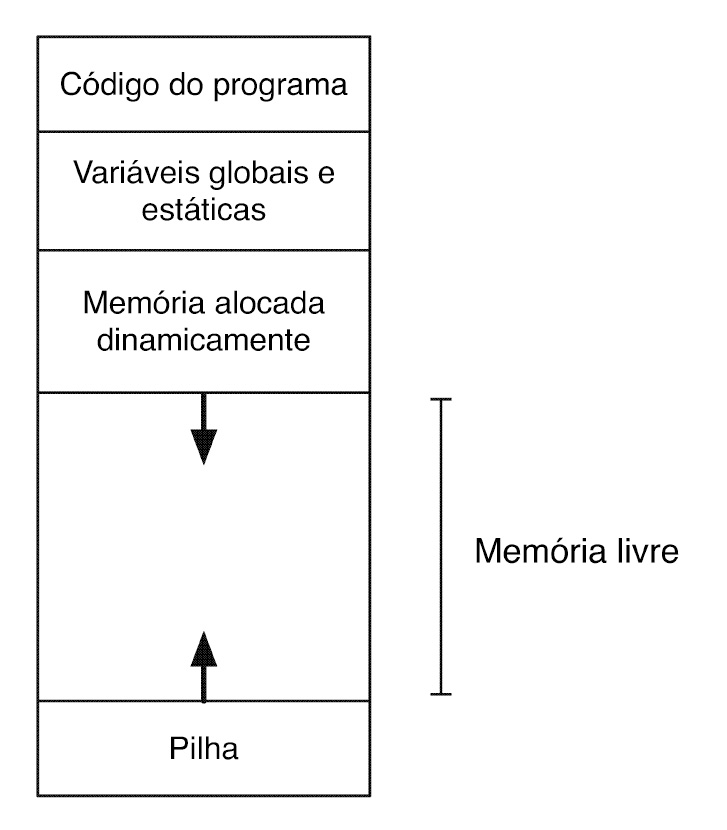
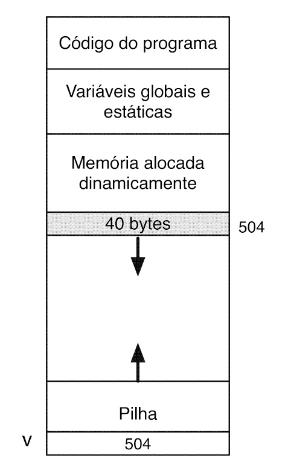
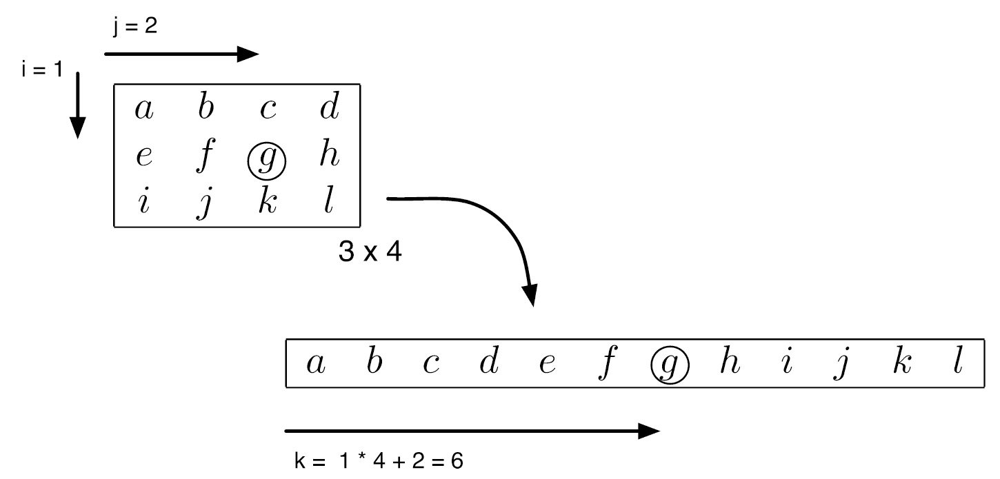
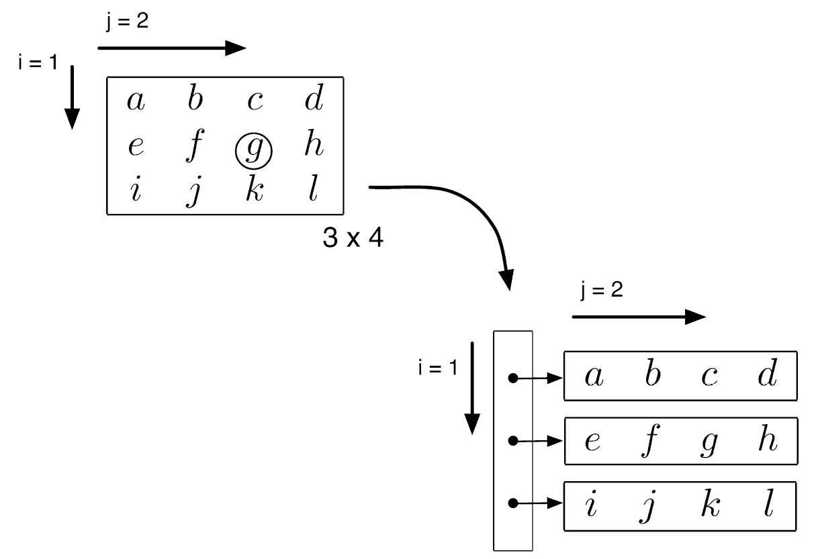

Alocação dinâmica de memória
Estas são as notas da quinta aula: como um programa organiza sua memória em regiões (pilha, heap
e as demais), como pedir e devolver blocos de memória em tempo de execução com malloc
e free, e como aplicar essas ideias a vetores e matrizes cujo tamanho só é conhecido
quando o programa já está rodando. Os exemplos interativos logo abaixo colocam parte dessa teoria
em prática, passo a passo.
Alocação dinâmica
Até aqui, todo vetor ou matriz deste curso teve um tamanho fixo, decidido em tempo de compilação:
int v[10]; reserva exatamente 10 posições, nem uma a mais, seja qual for a necessidade
real de cada execução do programa. A alocação dinâmica resolve essa rigidez: em
vez de declarar um vetor de tamanho fixo, o programa pede ao sistema, durante a execução, exatamente
a quantidade de memória de que precisa naquele momento — e devolve essa memória quando não precisa
mais dela. É o C oferecendo, através de duas funções da biblioteca padrão (malloc e
free, declaradas em stdlib.h), controle explícito sobre um tipo de memória
que os vetores comuns não alcançam.
Uso da memória
Um programa em execução organiza sua memória em regiões distintas: o código do programa (fixo), as variáveis globais e estáticas, a região de alocação dinâmica — o heap — e a pilha (stack), onde vivem as variáveis locais e o quadro de cada chamada de função (o "modelo de pilha" já visto no módulo de funções e ponteiros). Heap e pilha crescem em direções opostas, uma em direção à outra, dividindo entre si a memória livre restante — por isso alocar memória demais, ou nunca liberar o que já não é mais necessário, pode no limite colidir com a pilha e esgotar a memória disponível.

A função malloc(tamanho_em_bytes) pede ao sistema um bloco contíguo de memória do heap
com o tamanho pedido e devolve um ponteiro genérico (void *) para o
início desse bloco — ou NULL, se não houver memória disponível para atender o pedido;
por isso todo malloc deveria ser seguido por uma verificação
if (ponteiro == NULL), como fazem todos os exemplos deste módulo. O tamanho quase
sempre é escrito como quantidade * sizeof(tipo), para que o cálculo funcione em
qualquer plataforma, independentemente de quantos bytes cada tipo realmente ocupa ali. Memória
alocada dessa forma não desaparece sozinha ao fim de uma função, como uma variável local: ela
continua reservada até ser devolvida explicitamente com free(ponteiro) — esquecer de
chamar free é um vazamento de memória (memory leak): a memória fica
presa, inacessível, até o programa terminar.

malloc devolve na prática: o endereço inicial do bloco alocado (aqui, 504), guardado numa variável ponteiro comum.Alocação de vetores
Alocar um vetor dinamicamente segue sempre o mesmo padrão: tipo *v = malloc(n *
sizeof(tipo));, onde n — ao contrário do tamanho de um vetor comum — pode ser
uma variável, lida do usuário em tempo de execução, como fazem os exemplos Média e
variância e Soma elemento a elemento. Uma vez alocado, o vetor dinâmico se comporta
como um vetor comum: v[i] acessa o elemento i normalmente, porque, como
já visto no módulo de vetores, o nome de um vetor e a notação de colchetes são só formas
convenientes de fazer aritmética de ponteiro. A diferença é de onde a memória vem (heap, não pilha)
e de quem é responsável por devolvê-la (o programador, com free, não o sistema
automaticamente).
Vetores locais a funções
Essa diferença de origem tem uma consequência importante: um vetor comum declarado dentro de uma
função (int v[10];, na pilha) deixa de existir assim que a função retorna — devolver
um ponteiro para ele produziria um ponteiro pendurado (dangling pointer), apontando
para memória que já não pertence a ninguém. Um vetor alocado dinamicamente dentro da mesma função,
porém, mora no heap: sobrevive normalmente ao retorno da função, e é perfeitamente seguro devolver
seu endereço para quem chamou. É exatamente esse padrão que o exemplo Transposta de matriz
usa: a função transpose aloca a matriz transposta internamente e devolve o ponteiro
para ela — a memória continua válida em main, muito depois de transpose
já ter retornado.
Alocação de matrizes
Uma matriz alocada dinamicamente pode ser representada de duas formas diferentes — e a escolha entre elas aparece nos próprios exemplos deste módulo.
Matriz representada por um vetor simples
A primeira forma reaproveita a ideia de matriz como vetor único e contíguo (row-major), já
vista no módulo de vetores e matrizes — só que agora o bloco inteiro é alocado de uma vez, com
malloc(linhas * colunas * sizeof(tipo)), como faz o exemplo Transposta de
matriz: float *trp = malloc(cols * rows * sizeof(float));. Sem os dois pares de
colchetes de uma matriz estática, o acesso a mat[i][j] precisa ser feito manualmente,
com a mesma fórmula de índice linear do módulo anterior: mat[i * colunas + j].

i, coluna j de uma matriz com N colunas está na posição i * N + j do vetor.
Essa forma tem uma vantagem prática direta: como é um único bloco contíguo, um único
free libera a matriz inteira de uma vez.
Matriz representada por um vetor de ponteiros
A segunda forma — usada pelos exemplos Soma de matrizes e Alocar e desalocar
matriz — representa a matriz como um vetor de ponteiros: primeiro aloca-se um vetor de
linhas ponteiros (int **matrix = malloc(linhas * sizeof(int *));), e
depois, em um laço, aloca-se separadamente cada linha
(matrix[i] = malloc(colunas * sizeof(int));). O resultado pode ser acessado com a
notação familiar matrix[i][j], sem precisar calcular índice linear algum — só que
agora são linhas + 1 blocos de memória independentes (o vetor de ponteiros mais uma
linha para cada ponteiro), não um só.

Essa independência entre as linhas tem um custo na hora de liberar a memória: é preciso desalocar
cada linha individualmente, num laço, antes de desalocar o vetor de ponteiros — na ordem
inversa da alocação, como fazem deallocate_matrix (no exemplo Soma de
matrizes) e o laço final de Alocar e desalocar matriz. Esquecer de liberar alguma
linha, ou liberar o vetor de ponteiros antes das linhas (perdendo os endereços delas no processo),
são as duas formas mais comuns de vazamento de memória com esse padrão.
Escolha um exemplo abaixo: para cada um você vê o código-fonte, uma explicação da mecânica central e a simulação da execução passo a passo — sem precisar compilar nada.
Exemplos
-
Média e variância
Vetor alocado dinamicamente: calcula a média e a variância dos valores lidos.
-
Soma elemento a elemento
Dois vetores alocados dinamicamente, somados posição a posição num terceiro vetor.
-
Transposta de matriz
Matriz alocada como vetor único; uma função aloca e devolve a matriz transposta.
-
Soma de matrizes
Duas matrizes alocadas como vetor de ponteiros, somadas numa terceira.
-
Alocar e desalocar matriz
Só o esqueleto de alocação e liberação de uma matriz como vetor de ponteiros.
Média e variância
ver no GitHub ↗#include <stdio.h>
#include <stdlib.h>
#include <math.h>
// Function to calculate the mean of a vector
double calculate_mean(double *vector, int size)
{
double sum = 0.0;
for (int i = 0; i < size; i++)
{
sum += vector[i];
}
return sum / size;
}
// Function to calculate the variance of a vector
double calculate_variance(double *vector, int size, double mean)
{
double sum_squared_diff = 0.0;
for (int i = 0; i < size; i++)
{
double diff = vector[i] - mean;
sum_squared_diff += diff * diff;
}
return sum_squared_diff / (size - 1);
}
int main()
{
int size; // Number of elements in the vector
printf("Enter the size of the vector: ");
scanf("%d", &size);
// Dynamically allocate memory for the vector
double *vector = (double *)malloc(size * sizeof(double));
if (vector == NULL)
{
printf("Memory allocation failed.\n");
return 1;
}
// Input the vector elements
printf("Enter the vector elements:\n");
for (int i = 0; i < size; i++)
{
scanf("%lf", &vector[i]);
}
// Calculate mean and variance
double mean = calculate_mean(vector, size);
double variance = calculate_variance(vector, size, mean);
printf("Mean: %.2lf\n", mean);
printf("Variance: %.2lf\n", variance);
// Free the dynamically allocated memory
free(vector);
return 0;
}Como funciona a alocação
O tamanho do vetor (size) é lido do usuário, então malloc(size *
sizeof(double)) só pode acontecer depois disso — é o próprio valor lido que decide
quantos bytes pedir. A verificação if (vector == NULL) trata o caso (raro, mas
possível) de o sistema não ter memória livre suficiente para atender o pedido.
Execução passo a passo — size = 5, valores 4 8 6 5 3
Clique em “Próximo” para começar a simulação.
Saída no terminal
Enter the size of the vector: 5 Enter the vector elements: 4 8 6 5 3 Mean: 5.20 Variance: 3.70
free(vector);, a variável vector continua existindo e ainda
guarda o mesmo endereço, mas esse endereço não pertence mais ao programa — ler ou escrever
nele (use-after-free) é um bug clássico e um comportamento indefinido. Por segurança,
é comum atribuir vector = NULL; logo após o free, para que um uso
acidental subsequente falhe de forma óbvia em vez de silenciosamente.
Soma elemento a elemento
ver no GitHub ↗#include <stdio.h>
#include <stdlib.h>
// Function to calculate the cross product of two 3D vectors
void calculate_elementwise_sum(double *vector1, double *vector2, double *result, int size)
{
int sum = 0;
for (int i = 0; i < size; i++)
result[i] += vector1[i] + vector2[i];
}
int main()
{
double *vector1, *vector2, *sum;
int size = 5;
// Dynamically allocate memory for the vectors and cross product
vector1 = (double *)malloc(size * sizeof(double));
vector2 = (double *)malloc(size * sizeof(double));
sum = (double *)malloc(size * sizeof(double));
if (vector1 == NULL || vector2 == NULL || sum == NULL)
{
printf("Memory allocation failed.\n");
return 1;
}
printf("Enter the elements of vector1: ");
for (int i = 0; i < size; i++)
{
scanf("%lf", &vector1[i]);
}
printf("Enter the elements of vector2: ");
for (int i = 0; i < size; i++)
{
scanf("%lf", &vector2[i]);
}
// Calculate the cross product
calculate_elementwise_sum(vector1, vector2, sum, size);
for (int i = 0; i < size; i++)
printf("sum[%d] = %lf\n", i, sum[i]);
// Free the dynamically allocated memory
free(vector1);
free(vector2);
free(sum);
return 0;
}Três blocos independentes
vector1, vector2 e sum são três ponteiros, cada um
apontando para seu próprio bloco de 40 bytes no heap — alocar um não tem nenhuma relação com
alocar os outros dois. Repare que size aqui é fixo em 5, não lido do
usuário como no exemplo anterior: a alocação dinâmica não exige uma leitura de tamanho, só
permite que ele seja decidido em tempo de execução quando fizer sentido.
Execução passo a passo
Clique em “Próximo” para começar a simulação.
Saída no terminal
Enter the elements of vector1: 1 2 3 4 5 Enter the elements of vector2: 10 20 30 40 50 sum[0] = 11.000000 sum[1] = 22.000000 sum[2] = 33.000000 sum[3] = 44.000000 sum[4] = 55.000000
result[i] +=
... usa +=, não =, mas sum foi criado com
malloc, que não zera a memória (ao contrário de calloc).
Somar a um valor inicial "de lixo" é comportamento indefinido — nesta execução, por sorte, o
bloco recém-alocado veio zerado do sistema operacional e o resultado saiu certo, mas isso não é
garantido: ferramentas como o valgrind acusam claramente essa leitura de memória
não inicializada. O correto seria result[i] = vector1[i] + vector2[i];.
Transposta de matriz
ver no GitHub ↗#include <stdio.h>
#include <stdlib.h>
float *transpose(int rows, int cols, float *mat)
{
// Allocate memory for the transposed matrix
float *trp = (float *)malloc(cols * rows * sizeof(float));
// Fill the transposed matrix
for (int i = 0; i < rows; i++)
{
for (int j = 0; j < cols; j++)
{
trp[j * rows + i] = mat[i * cols + j];
}
}
return trp;
}
int main()
{
int rows, cols;
printf("Enter the number of rows: ");
scanf("%d", &rows);
printf("Enter the number of columns: ");
scanf("%d", &cols);
// Dynamically allocate memory for the original matrix
float *matrix = (float *)malloc(rows * cols * sizeof(float));
if (matrix == NULL)
{
printf("Memory allocation failed.\n");
return 1;
}
// Input the elements of the original matrix
printf("Enter the elements of the matrix (%d x %d):\n", rows, cols);
for (int i = 0; i < rows; i++)
{
for (int j = 0; j < cols; j++)
{
printf("matrix[%d,%d]=", i, j);
scanf("%f", &matrix[i * cols + j]);
}
}
// Calculate the transposed matrix
float *transposed_matrix = transpose(rows, cols, matrix);
// Print the transposed matrix
printf("Transposed Matrix:\n");
for (int i = 0; i < cols; i++)
{
for (int j = 0; j < rows; j++)
{
printf("%.2f ", transposed_matrix[i * rows + j]);
}
printf("\n");
}
// Free the dynamically allocated memory
free(matrix);
free(transposed_matrix);
return 0;
}Um vetor alocado dentro da função
trp é alocado dentro de transpose, mas como vive no heap
(não na pilha da função), continua válido depois que transpose retorna — é o
padrão descrito nas notas: uma função pode alocar memória e devolver o ponteiro com segurança
para quem a chamou.
Execução passo a passo — matriz 2×3
Clique em “Próximo” para começar a simulação.
Saída no terminal
Enter the number of rows: 2 Enter the number of columns: 3 Enter the elements of the matrix (2 x 3): matrix[0,0]=1 matrix[0,1]=2 matrix[0,2]=3 matrix[1,0]=4 matrix[1,1]=5 matrix[1,2]=6 Transposed Matrix: 1.00 4.00 2.00 5.00 3.00 6.00
trp fosse declarado como um vetor comum (float trp[rows * cols];,
na pilha) em vez de alocado com malloc, o return trp; devolveria um
ponteiro pendurado — a memória seria desfeita assim que transpose retornasse, e
usá-la em main seria comportamento indefinido, mesmo compilando sem erro.
Soma de matrizes
ver no GitHub ↗#include <stdio.h>
#include <stdlib.h>
// Function to allocate memory for a matrix
int **allocate_matrix(int rows, int cols)
{
int **matrix = (int **)malloc(rows * sizeof(int *));
for (int i = 0; i < rows; i++)
{
matrix[i] = (int *)malloc(cols * sizeof(int));
}
return matrix;
}
// Function to deallocate memory for a matrix
void deallocate_matrix(int **matrix, int rows)
{
for (int i = 0; i < rows; i++)
{
free(matrix[i]);
}
free(matrix);
}
// Function to read values for a matrix
void read_matrix_values(int rows, int cols, int **matrix)
{
for (int i = 0; i < rows; i++)
{
for (int j = 0; j < cols; j++)
{
printf("matrix[%d,%d]=", i, j);
scanf("%d", &matrix[i][j]);
}
}
}
void matrix_sum(int rows, int cols, int **mat1, int **mat2, int **result)
{
for (int i = 0; i < rows; i++)
{
for (int j = 0; j < cols; j++)
{
result[i][j] = mat1[i][j] + mat2[i][j];
}
}
}
int main()
{
int rows, cols;
printf("Enter the number of rows: ");
scanf("%d", &rows);
printf("Enter the number of columns: ");
scanf("%d", &cols);
// Allocate memory for matrices
int **matrix1 = allocate_matrix(rows, cols);
int **matrix2 = allocate_matrix(rows, cols);
int **result = allocate_matrix(rows, cols);
// Input elements for matrix1
printf("Enter elements for matrix 1:\n");
read_matrix_values(rows, cols, matrix1);
// Input elements for matrix2
printf("Enter elements for matrix 2:\n");
read_matrix_values(rows, cols, matrix2);
// Calculate the sum of matrices
matrix_sum(rows, cols, matrix1, matrix2, result);
// Print the result matrix
printf("Sum of Matrices:\n");
for (int i = 0; i < rows; i++)
{
for (int j = 0; j < cols; j++)
{
printf("%d ", result[i][j]);
}
printf("\n");
}
// Deallocate memory for matrices
deallocate_matrix(matrix1, rows);
deallocate_matrix(matrix2, rows);
deallocate_matrix(result, rows);
return 0;
}Alocação e liberação em funções auxiliares
Este exemplo isola o padrão "vetor de ponteiros" em duas funções reutilizáveis:
allocate_matrix aloca o vetor de ponteiros e cada linha, e
deallocate_matrix desfaz exatamente isso, na ordem inversa — libera cada linha
primeiro, e só depois o vetor de ponteiros.
Execução passo a passo — matrizes 2×2
Clique em “Próximo” para começar a simulação.
Saída no terminal
Enter the number of rows: 2 Enter the number of columns: 2 Enter elements for matrix 1: matrix[0,0]=1 matrix[0,1]=2 matrix[1,0]=3 matrix[1,1]=4 Enter elements for matrix 2: matrix[0,0]=5 matrix[0,1]=6 matrix[1,0]=7 matrix[1,1]=8 Sum of Matrices: 6 8 10 12
deallocate_matrix importa: se free(matrix); (o vetor de
ponteiros) rodasse antes do laço que libera cada matrix[i], os endereços das
linhas seriam perdidos para sempre — cada linha viraria um vazamento de memória permanente,
já que nada mais no programa saberia onde ela está.
Alocar e desalocar matriz
ver no GitHub ↗#include <stdio.h> // For standard input/output
#include <stdlib.h> // For malloc and free
int main()
{
int rows, cols;
printf("Enter the number of rows: ");
scanf("%d", &rows);
printf("Enter the number of columns: ");
scanf("%d", &cols);
int **matrix = (int **)malloc(rows * sizeof(int *));
for (int i = 0; i < rows; i++)
matrix[i] = (int *)malloc(cols * sizeof(int));
// Deallocate memory for the matrix
for (int i = 0; i < rows; i++)
free(matrix[i]);
free(matrix);
return 0;
}Só o esqueleto, sem processamento
Este exemplo não lê valores para dentro da matriz nem imprime nada — de propósito. Ele existe
só para isolar, sem distrações, o padrão de alocação e liberação de uma matriz representada
como vetor de ponteiros: útil como referência mínima, e um bom candidato para testar com
valgrind ./programa e confirmar visualmente "zero vazamentos".
Execução passo a passo — matriz 3×2
Clique em “Próximo” para começar a simulação.
Saída no terminal
Enter the number of rows: 3 Enter the number of columns: 2
free das linhas (ou o free(matrix) final) fosse removido,
o programa continuaria rodando e terminando normalmente — o vazamento de memória não é um erro
que trava o programa, é memória que fica presa até o processo terminar. É por isso que
vazamentos são silenciosos e fáceis de não perceber sem uma ferramenta como o
valgrind.